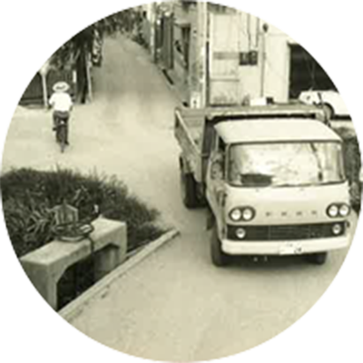
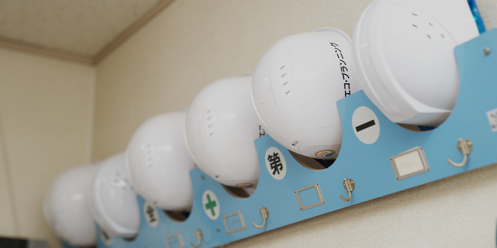
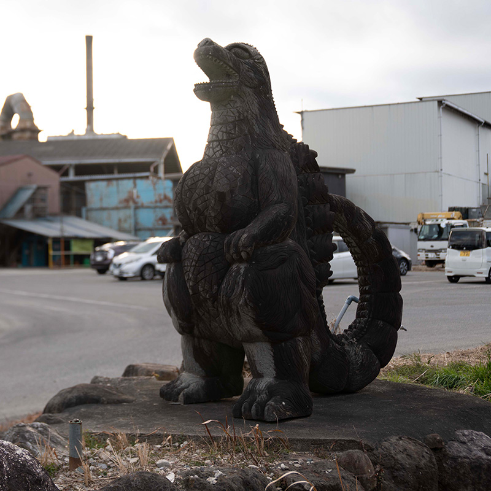
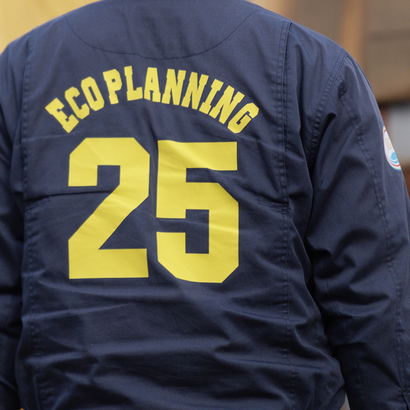
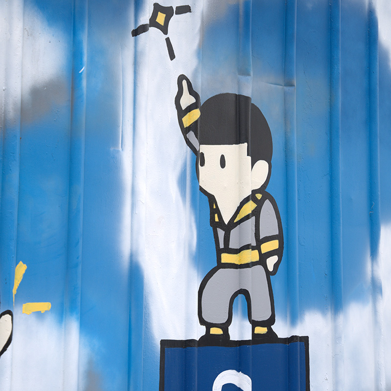
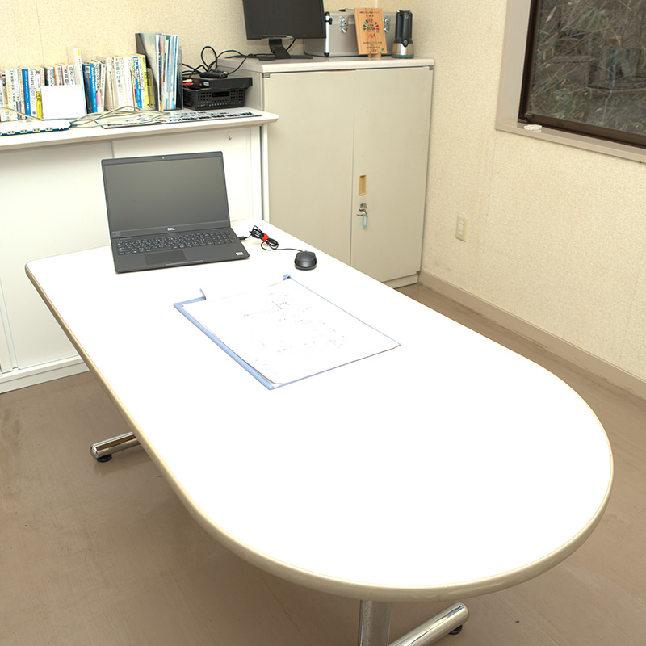

1966
大阪府寝屋川市にて吉田建設を創業。当時は家計を支えるべく、中学卒業後に自動車修理工や廃品回収など様々な職に就き、寝る間も惜しんで働く日々を過ごす。


会社概要




沿革
エコプランニングは創業50年、亀山に根差して40年
解体工事、産業廃棄物という業界で、環境や社会の為に様々な変化と挑戦をし続けて参りました。
会社概要
〒514-1254 三重県津市森町2343 [Google Map]
TEL：059-256-3003 / FAX：059-256-3290
三重県亀山市中庄町630 [Google Map]
TEL：0595-83-3330 / FAX：0595-82-0401
解体工事 / アスベスト調査・除去工事 / 不用品回収
三重県・愛知県を中心に全国対応可
収集運搬：
三重県、愛知県、岐阜県、東京都、千葉県、埼玉県、神奈川県、石川県、富山県、滋賀県、奈良県、京都府、大阪府、兵庫県
その他の県も協業企業によって回収運搬も可能です。お気軽にご相談ください。
アクセス
三重県津市森町2343 [Google Map]
TEL：059-256-3003 / FAX：059-256-3290
三重県亀山市中庄町630 [Google Map]
TEL：0595-83-3330 / FAX：0595-82-0401
プライバシーポリシー
株式会社 エコ・プランニング（以下「弊社」）は、弊社の運営するウェブサイトをご利用いただくお客様のプライバシーの保護に努めています。 弊社が、サービスを提供するためには、お客様個人に関する情報（以下、「個人情報」といいます）を集めなければなりませんが、弊社でその情報のプライバシーを守り、秘密を保持するために様々な手段を講じています。弊社ではお客様のプライバシーを尊重しています。 弊社は個人情報を売買したり、交換したり、その他の方法で不正使用することには一切関与しておりません。 このウェブサイトをご利用になり、個人情報を供与することで、あなたはこのプライバシーポリシーに説明されている個人情報の取り扱い等について受諾し、承認したものとみなされます。
お客様から集めた個人情報は、以下の目的で利用します。
下記の場合には、お客様の事前の同意なく弊社はお客様の個人情報を開示できるものとします。
警察や裁判所、その他の政府機関から召喚状、令状、命令等によって要求された場合
人の生命、身体または財産の保護のために必要がある場合であって、お客様の同意を得ることが困難であるとき。
お客様の個人情報は、弊社が適切な管理を行なうとともに、漏洩、滅失、毀損の防止のために最大限の注意を払っております。尚、弊社ではお客様によりよいサービスを提供するため、個人情報を適切に取り扱っていると認められる外部の委託先に、個人情報の取り扱いの一部を委託しています。委託先は、委託業務を行なうために必要な範囲で個人情報を利用します。この場合、弊社は、委託先との間で個人情報の取り扱いについて適切な契約を締結し、適切な管理を要求いたします。
個人情報保護の重要性について、適時または定期的に適切な教育を行っております。また、弊社が個人情報を管理する際は、管理責任者を置き、適切な管理を行うとともに、外部への流出防止に努めます。さらに、外部からの不正アクセス、改ざん等の危険に対しては、適切かつ合理的な範囲の安全対策を実施し、お客様の個人情報保護に努めます。個人情報に係るデータベース等のアクセスについては、アクセス権を有するものを限定し、社内においても不正な利用がなされないように厳重に管理します。
リンク先での個人情報の利用については、弊社のプライバシーの考え方ではなく、リンク先自身のプライバシーの考え方に従って行われます。
弊社では、お客様に提供するサービス向上のため、上記各項目の内容を適宜見直し、改善してまいります。本書を変更する場合は、この変更について本ウェブサイトに掲載します。最新のプライバシー・ステートメントをサイトに掲載することにより、常にプライバシー情報の収集や使用方法を知ることができます。定期的にご確認くださいますようお願い申し上げます。また、当初情報が収集された時点で述べた内容と異なった方法で個人情報を使用する場合も、本ウェブサイトに掲載または電子メールにてご連絡させていただきます。
本ウェブサイトが当初と異なった方法で個人情報の使用をしてよいかどうかについての選択権は、お客様が有しております。

お問い合わせ
解体、産業廃棄物回収・持込、
不用品回収からハウスクリーニングまで
お困りごとは何でもお気軽にご相談ください。